bedmachine_3d documentation
bedmachine_3d creates a 3D map of BedMachine data.
Contents
- Requirements
- Syntax
- Description
- Example 1: Antarctic Peninsula
- Setting view orientation
- Bathymetry colormap
- Example 2: Amery Ice Shelf
- Vertical exaggeration
- Example 3: Pine Island Glacier
- Ice Transparency
- Example 4: Getz Ice Shelf
- Example 5: Greenland
- Example 6: Denman Glacier
- Specifying object properties
- Example 7: Advanced options
- Extra tips
- Known issues
- Citing this dataset
- Author Info
Requirements
This function requires a set of Matlab tools and a Bedmachine dataset, and both will depend on where you're working. Get them here:
- For Greenland: * Arctic Mapping Tools: https://www.mathworks.com/matlabcentral/fileexchange/63324 Greenland Bedmachine Data: https://nsidc.org/data/IDBMG4
- For Antarctica: * Antarctic Mapping Tools: https://www.mathworks.com/matlabcentral/fileexchange/47638 Antarctic Bedmachine Data: https://nsidc.org/data/nsidc-0756
Syntax
bedmachine_3d(latlim,lonlim) bedmachine_3d(xlim,ylim) bedmachine_3d(...,'buffer',extrakm) bedmachine_3d(...,'alpha',iceAlpha) bedmachine_3d(...,'greenland') h = bedmachine_3d(...)
Description
bedmachine_3d(latlim,lonlim) creates a 3D map of the region specified by latitude and longitude limits. latlim and lonlin can be two-element arrays to specify just the min and max extents, or latlim,lonlim can be a range of values, and the resulting map will cover the entire range. Plotting might be slow for very large areas, so start small and see what your computer can handle.
bedmachine_3d(xlim,ylim) as above, but map extents are specified by polar stereographic meters.
bedmachine_3d(...,'buffer',extrakm) adds a buffer of specified width in kilometers around the region of interest.
bedmachine_3d(...,'alpha',iceAlpha) sets the transparency of the ice. By default, iceAlpha=1, meaning fully opaque. Use a value between 0 and 1 for semitransparent ice.
bedmachine_3d(...,'greenland') plots Greenland instead of the default Antarctica.
h = bedmachine_3d(...) returns a structure of all the object graphical handles.
Example 1: Antarctic Peninsula
To make a map of any region of interest, you can simply enter the spatial extents of any region. You can enter coordinate in polar stereographic meters, or geographic (lat,lon). Here we'll use meters:
bedmachine_3d([-3000000 -1859450],[1881970 391935])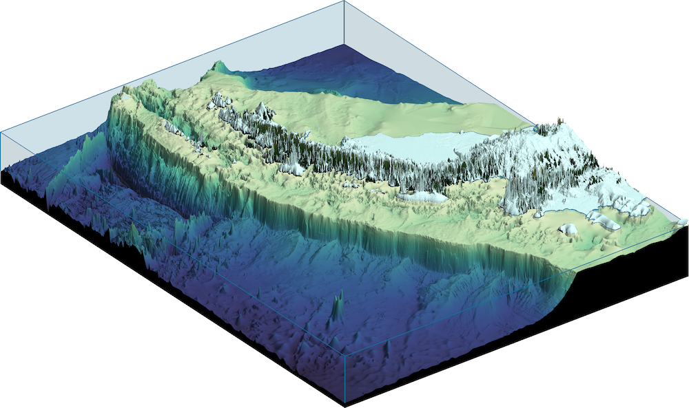
Setting view orientation
You can manually pan and rotate the map using the interactive figure tools, or you can use the view function to set the azimuth and elevation angles of the viewing angle, like this:
view(75,7)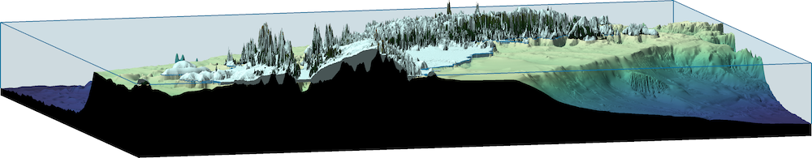
Turn it into a 2D map like this:
view(2) scalebarps('color','w')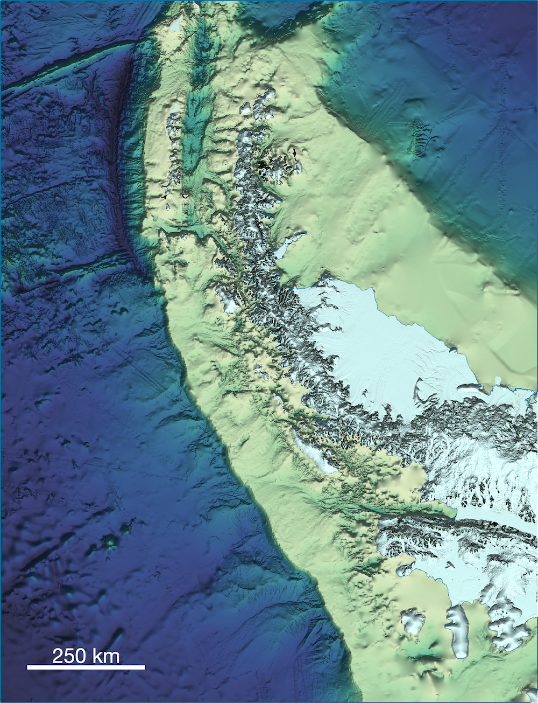
Bathymetry colormap
By default, the bedmachine_3d function attempts to use the topo colormap from the cmocean function, which is available on the Mathworks File Exchange as a standalone function, or as part of the Climate Data Toolbox for Matlab. If you don't have the cmocean function, your default colormap will be used for bathymetry.
To set the extents of the bathymetry color axis, simply use the caxis command. Suggestion: Enter values that are symmetric about zero to sea level in the center of the color scale:
caxis([-1 1]*1500)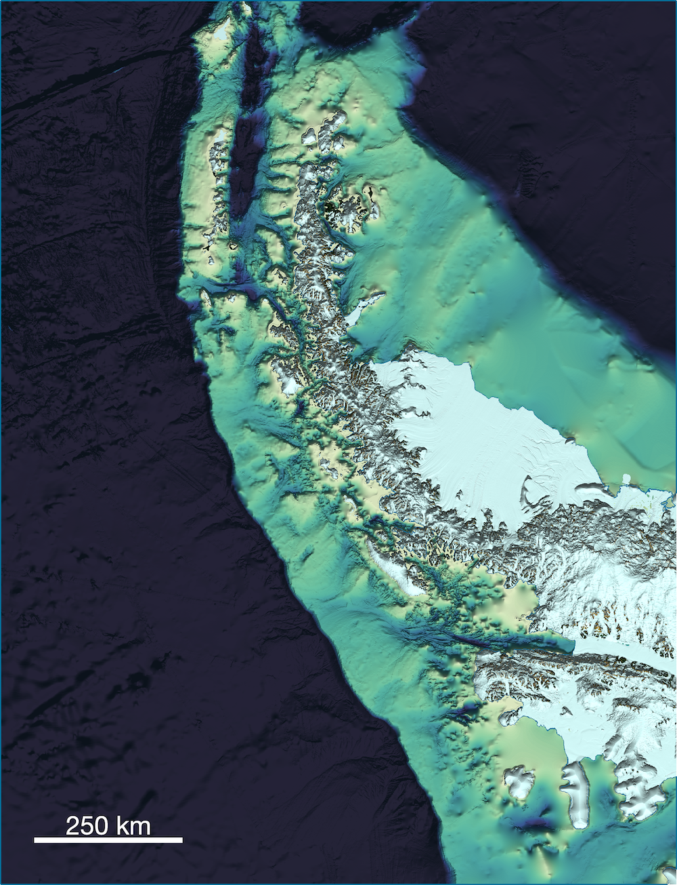
Example 2: Amery Ice Shelf
Instead of entering the spatial extents of your region of interest in polar stereographic meters, you may alternatively use geographic coordinates:
lat = [-75.36 -65.30]; lon = [63.64 65.18]; figure bedmachine_3d(lat,lon);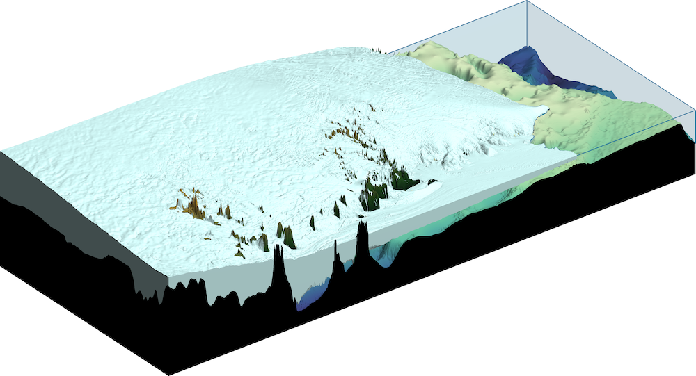
Change the orientation to your liking:
view(70.5,11)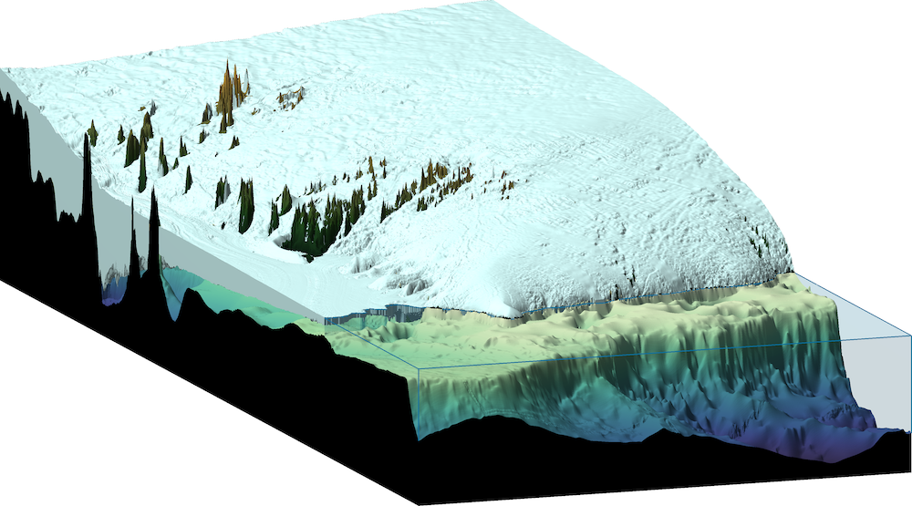
Vertical exaggeration
By default, bedmachine_3d plots at 20x vertical exaggeration. To change this, set the third value in the data aspect ratio using the daspect command. Here we'll change it to 100x exaggeration by specifying 1/100:
daspect([1 1 1/100])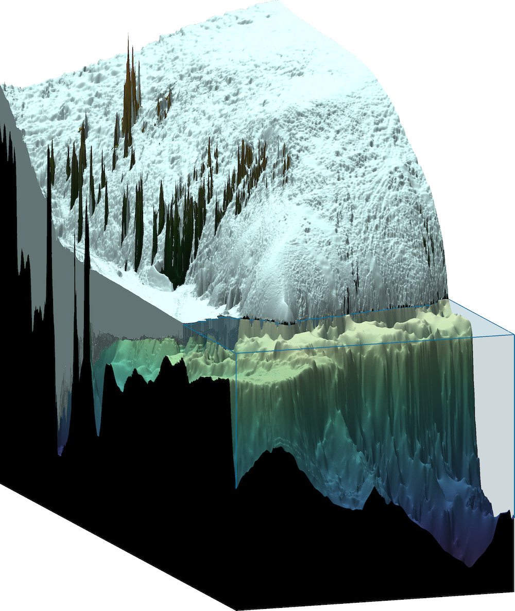
Example 3: Pine Island Glacier
If you don't know the coordinates of the extents of the map you'd like to generate, but you know what feature you want at the center, use the scarloc function to get the center coordinates:
[piglatin,piglon] = scarloc('pine island glacier')
piglatin = -75.1667 piglon = -100
With just the center coordinates, you can add a buffer on all sides of the center coordinates. For example, adding 500 km buffer on all sides of the center location of PIG, we'll get a 1000x1000 km map:
figure
bedmachine_3d(piglatin,piglon,'buffer',500);
view(29,42)
caxis([-1 1]*2000)
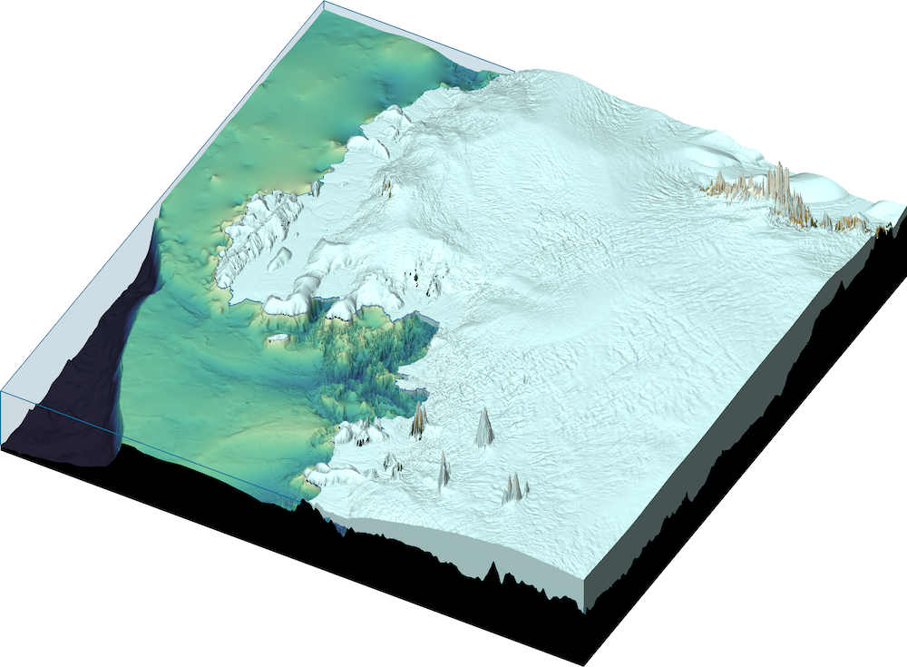 Ice Transparency
You can make the ice semitransparent by specifying a value of alpha between 0 (invisible) and 1 (opaque):
[piglatin,piglon] = scarloc('pine island glacier'); figure bedmachine_3d(piglatin,piglon,... % center coordinates 'buffer',500,... % 500 km on all sides (a 1000x1000 km map) 'alpha',0.5); % semitransparent ice view(29,42) caxis([-1 1]*2000)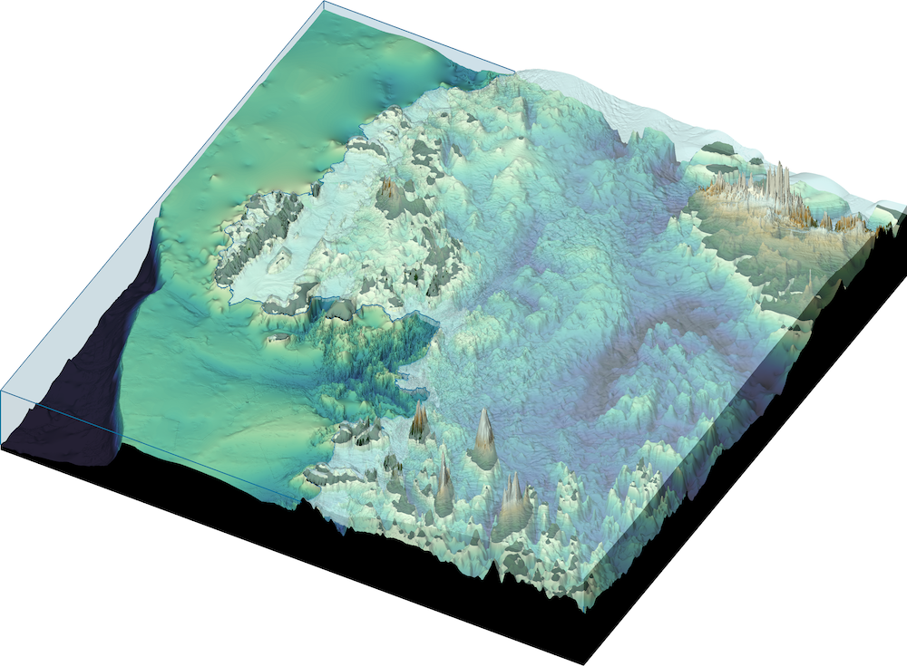
Example 4: Getz Ice Shelf
Another way to enter the location of interest is simply to enter all of the coordinates of the area you want to plot. For example, if you want a map that fully encompasses the Getz Ice Shelf, use antbounds_data to get the outline of the ice shelf:
[lat,lon] = antbounds_data('getz');
figure
plotps(lat,lon)
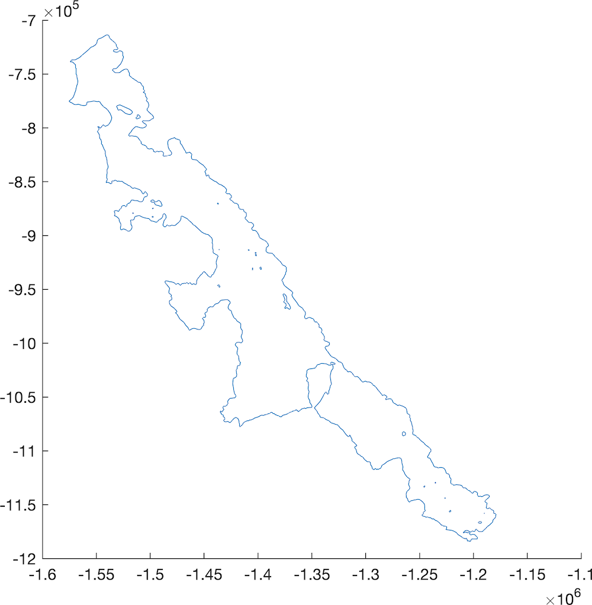 With the coordinates of the outline of Getz, we can now make a 3D map of Getz Ice Shelf. Add a buffer of 100 km on all sides for good measure:
figure
bedmachine_3d(lat,lon,'buffer',100);
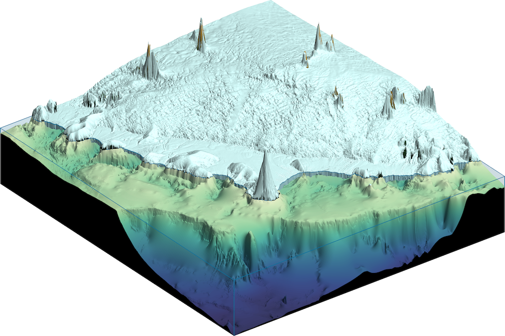 And again, we can change the transparency:
figure bedmachine_3d(lat,lon,'buffer',100,'alpha',0.6); caxis([-1 1]*2500)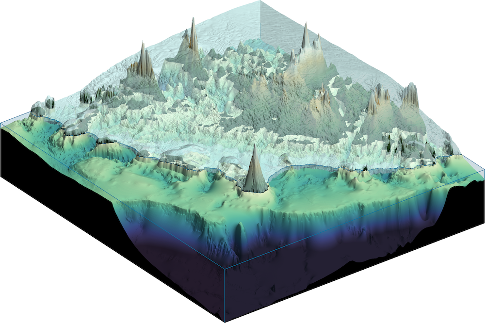
Example 5: Greenland
Greenland works the same way as Antarctica, but a word of caution: Although Greenland is smaller than Antarctica, the Greenland BedMachine dataset is much higher resolution, so plotting large areas might be slow!
Here let's start by getting oriented. Assuming you have Arctic Mapping Tools, draw an outline of Greenland, and then add a yline at top of the map we'll generate, and a place a vertical line to demark the left side of our region of interest:
figure greenland yline(-3e6) xline(-0.5e6)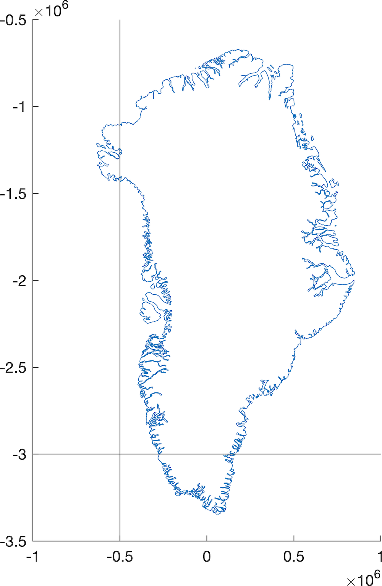
With the x and y coordinates shown as straight lines in the map above, enter the extents of the bottom right quadrant of that map. Use Inf to say we want all the data to the edge of the BedMachine dataset.
I reiterate, this a small portion of Greenland, but due to the high resolution, this takes about 10 seconds for my laptop to render:
figure
bedmachine_3d([-0.5e6 Inf],[-Inf -3e6],'greenland')
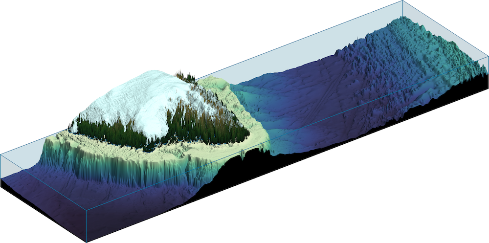 Get a different perspective:
view(-143,32)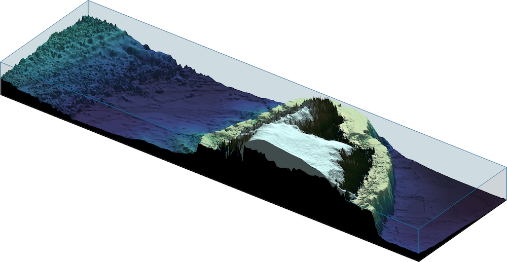
Example 6: Denman Glacier
In this example, we'll explore how to set specific properties of the graphics objects. Start by plotting 3D map of Denman Glacier, and return a handle h of the graphics objects:
[lat,lon] = scarloc('denman glacier'); figure h = bedmachine_3d(lat,lon,'bufer',300,'alpha',0.6);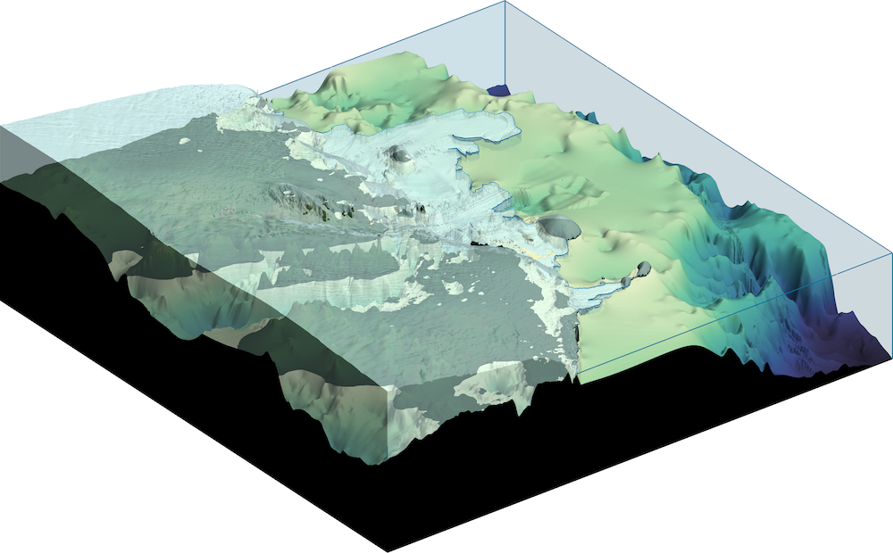
Take a look at the contents of h:
h
h =
struct with fields:
bed: [1×1 Surface]
base: [1×1 Surface]
sfz: [1×1 Surface]
iceside: [1×1 Surface]
bedside: [1×1 Surface]
oceansfz: [1×1 Patch]
oceanside: [1×1 Surface]
corner: [1×4 Graphics]
Above, you see that the bed is plotted as a surface object, the top and sides of the ice sheet are plotted as surfaces, the top of the ocean is plotted as a patch object, and there are four vertical lines that mark the corners of the ocean.
You can query or change the properties of each object however you'd like. For example, if you'd like to know how transparent the ocean surface is, check the FaceAlpha value, like this:
h.oceansfz.FaceAlpha
ans =
0.1000
Specifying object properties
To change any object property, simply set it to your liking. Here we'll make the top and sides of the ocean more opaque, and we'll use my rgb function (available on File Exchange; also part of the Climate Data Toolbox) to make the ocean orange:
h.oceansfz.FaceAlpha = 0.6; h.oceanside.FaceAlpha = 0.6; h.oceansfz.FaceColor = rgb('orange'); h.oceanside.FaceColor = rgb('orange');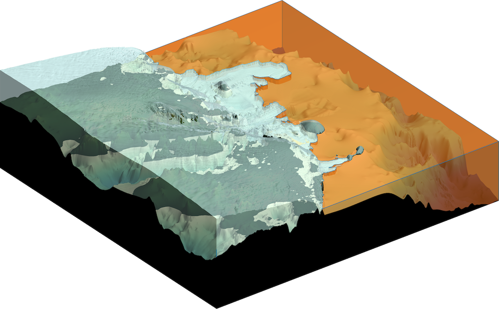
Example 7: Advanced options
In this example, we'll start with a map of the Filchner Ice Shelf:
[lat,lon] = antbounds_data('filchner'); figure h = bedmachine_3d(lat,lon,'bufer',50,'alpha',0.4); view(-122,37) caxis([-1 1]*1400) % Make the base of the ice shelf extra transparent: h.base.FaceAlpha = 0.2;
Looks pretty good. Now what if we wanted to depict basal melt rates? That data should be shown nowhere else but the base of the ice shelf, right? The good news is the base of the ice shelf is plotted as a surface object, so it's easy to add melt rates as CData.
Unfortunately, Matlab only lets us use one active colormap at a time, so plotting color-scaled bed topography along with color-scaled melt rates will be difficult. One solution: Convert either the color scaling of the basal topography or the melt rates to a static RGB image.
Start by converting basal topography colormap to a static image:
% Get the bed elevation data: bed = h.bed.ZData; % Convert to a grayscale matrix: bed_gray = mat2gray(bed,[-1 1]*1400); % Index the grayscale matrix to the topo colormap: cmap = cmocean('topo'); ind = gray2ind(bed_gray,size(cmap,1)); bed_RGB = reshape(cmap(ind+1,:),[size(bed,1) size(bed,2) 3]); % Change the bed color data to a static texturemap: h.bed.CData = bed_RGB; h.bed.FaceColor = 'texturemap';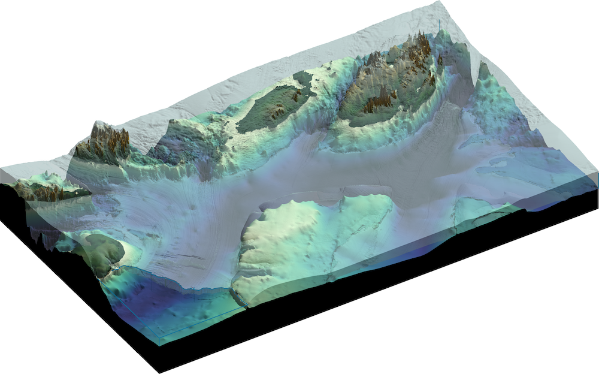
Now the bed color is no longer tied to the current colormap. You can change the color axis limits or the colormap without affecting how the bed looks. And that's what we will do.
Now we will use melt_interp_adusumilli (available on File Exchange) to interpolate melt rates published by Adusumilli et al. 2020:
% Get surface grid coordinates: x = h.base.XData; y = h.base.YData; % Convert arrays to grids: [X,Y] = meshgrid(x,y); % Get melt rates corresponding to the grid: melt = melt_interp_adusumilli(X,Y);
Now we can set the color data of the ice shelf to the basal melt rates, and change the colormap accordingly:
h.base.CData = melt; h.base.FaceColor = 'texturemap'; h.base.FaceAlpha = .9; caxis([-3 3]) cmocean balance cb = colorbar; ylabel(cb,'melt rate (m/yr)')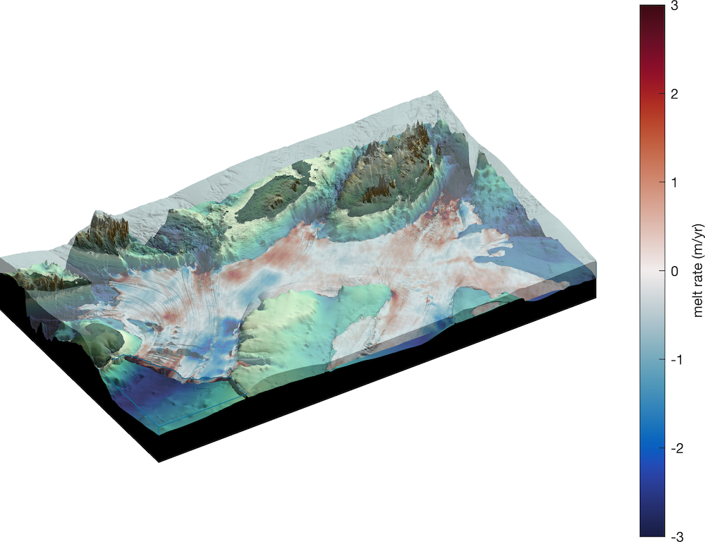
Or of course you can always change it to a 2D view:
view(2)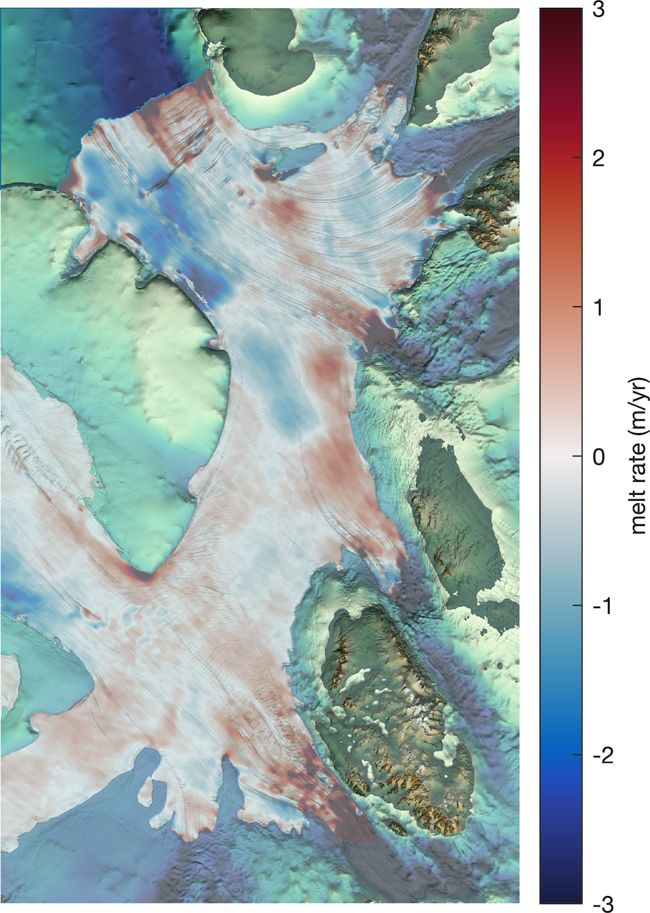
Extra tips
- For a slightly better appearance, try setting
lighting phong
which I find gives a more natural feel. However, phong lighting is slow when graphics are complex, especially if the region you're plotting is large. If you use phong lighting set it at the very end, just before you save the image. That way you won't have to deal with its sluggishness while you tinker with the viewing angle or whatnot.
- Export at high resolution. I still like export_fig best, but now Matlab at least lets you specify the resolution when using the print command. Do that. Export using at least 300 dpi. Maybe even 500 or 600. I really don't understand the argument in favor of low-res graphics.
Known issues
- The function currently only plots the primary (largest) ice mass within the extents of any given map.
- Depending on the spatial extents of the map, the function sometimes has difficulty finding the proper outline of the ocean. In such cases, the surface of the ocean may vanish. In such cases, you can either adjust the extents of the map a little bit, or you can try to track down potential NaNs in the outline of the ocean surface.
Citing this dataset
If you use BedMachine data, please cite the Morlighem paper listed below. And if this function is useful for you, please do me a kindness and cite my Antarctic Mapping Tools paper.
Morlighem M. et al., (2017), BedMachine v3: Complete bed topography and ocean bathymetry mapping of Greenland from multi-beam echo sounding combined with mass conservation, Geophys. Res. Lett., 44, doi:10.1002/2017GL074954.
Morlighem, M., E. Rignot, T. Binder, D. D. Blankenship, R. Drews, G. Eagles, O. Eisen, F. Ferraccioli, R. Forsberg, P. Fretwell, V. Goel, J. S. Greenbaum, H. Gudmundsson, J. Guo, V. Helm, C. Hofstede, I. Howat, A. Humbert, W. Jokat, N. B. Karlsson, W. Lee, K. Matsuoka, R. Millan, J. Mouginot, J. Paden, F. Pattyn, J. L. Roberts, S. Rosier, A. Ruppel, H. Seroussi, E. C. Smith, D. Steinhage, B. Sun, M. R. van den Broeke, T. van Ommen, M. van Wessem, and D. A. Young. 2019. Deep glacial troughs and stabilizing ridges unveiled beneath the margins of the Antarctic ice sheet, Nature Geoscience. doi:10.1016/j.cageo.2016.08.003.
Greene, C. A., Gwyther, D. E., & Blankenship, D. D. Antarctic Mapping Tools for Matlab. Computers & Geosciences. 104 (2017) pp.151-157. doi:10.1016/j.cageo.2016.08.003.
Author Info
This function and supporting documentation were written by Chad A. Greene of NASA Jet Propulsion Laboratory, April 2021.